Report¶
External Economies¶
Quarterly Report¶
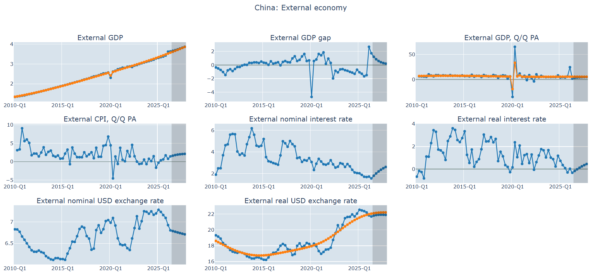
| Chart | Variable | Explanation |
|---|---|---|
| External GDP | gdpw | gdpw_tnd |
Real GDP level and trend |
| External GDP gap | 100*(gdpw_gap - 1) |
% of trend |
| External GDP, Q/Q PA | apct_gdpw | apct_gdpw_tnd |
Annualized Q/Q growth and trend |
| External CPI, Q/Q PA | apct_cpiw |
Annualized Q/Q CPI growth |
| External nominal interest rate | 100*iw |
Nominal interest rate |
| External real interest rate | 100*riw |
Real interest rate |
| External nominal USD exchange rate | ew |
Local currency per USD |
| External real USD exchange rate | rew | rew_tnd |
Real exchange rate and trend |
Annual Report¶
| Chart | Variable | Explanation |
|---|---|---|
| External GDP | yy_gdpw | yy_gdpw_tnd |
Annual real GDP level and trend (sums) |
| External GDP gap | 100*(yy_gdpw_gap - 1) |
% of annual trend |
| External GDP, Y/Y | yy_pct_gdpw | yy_pct_gdpw_tnd |
% calendar-year growth vs trend growth |
| External CPI, Y/Y | yy_pct_cpiw |
% change of annual average CPI |
| External nominal interest rate | 100*yy_iw |
Annual average nominal interest rate |
| External real interest rate | 100*yy_riw |
Annual average real interest rate |
| External nominal USD exchange rate | yy_ew |
Annual average local currency per USD |
Focus Economies¶
Quarterly Reports¶
Real GDP ratios of GDP components
Shows each real expenditure component as a share of real GDP.
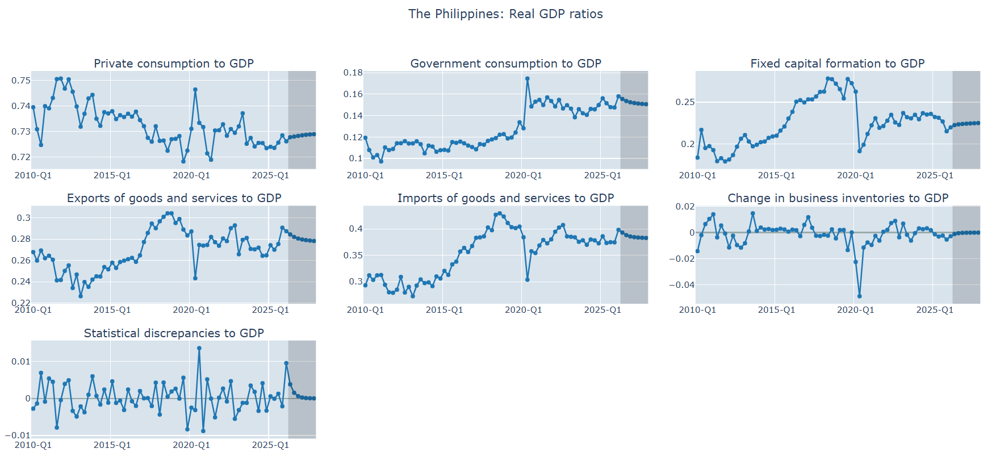
| Chart | Variable |
|---|---|
| Private consumption to GDP | cpr_to_gdp |
| Government consumption to GDP | cgg_to_gdp |
| Fixed capital formation to GDP | fcf_to_gdp |
| Exports of goods and services to GDP | xgs_to_gdp |
| Imports of goods and services to GDP | mgs_to_gdp |
| Change in business inventories to GDP | cbi_to_gdp |
| Statistical discrepancies to GDP | sdx_to_gdp |
Gaps in real GDP components
Shows % deviation from trend.
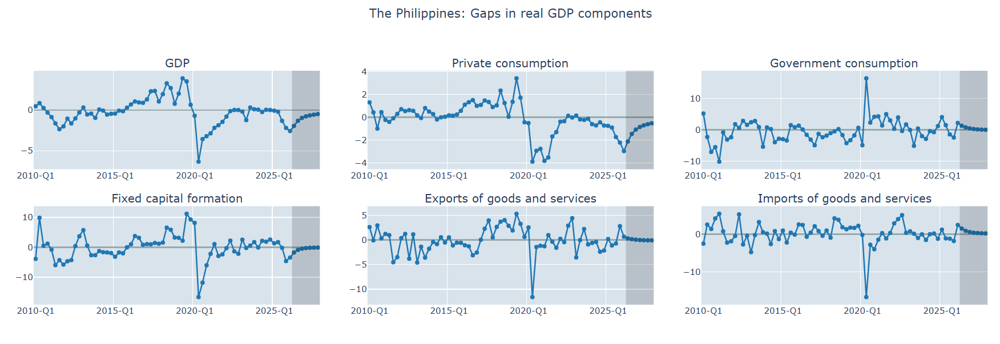
| Chart | Variable |
|---|---|
| GDP | 100*(gdp_gap-1) |
| Private consumption | 100*(cpr_gap-1) |
| Government consumption | 100*(cgg_gap-1) |
| Fixed capital formation | 100*(fcf_gap-1) |
| Exports of goods and services | 100*(xgs_gap-1) |
| Imports of goods and services | 100*(mgs_gap-1) |
Real GDP components annualised Q/Q growth
% annualised Q/Q growth, computed as 100*((x/x[-1])^4 - 1).
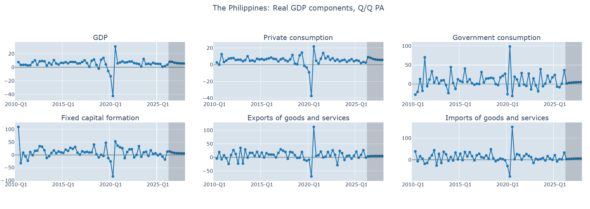
| Chart | Variable |
|---|---|
| GDP | apct_gdp |
| Private consumption | apct_cpr |
| Government consumption | apct_cgg |
| Fixed capital formation | apct_fcf |
| Exports of goods and services | apct_xgs |
| Imports of goods and services | apct_mgs |
Annual sum of real GDP components Y/Y growth
% growth of a 4-quarter rolling sum.
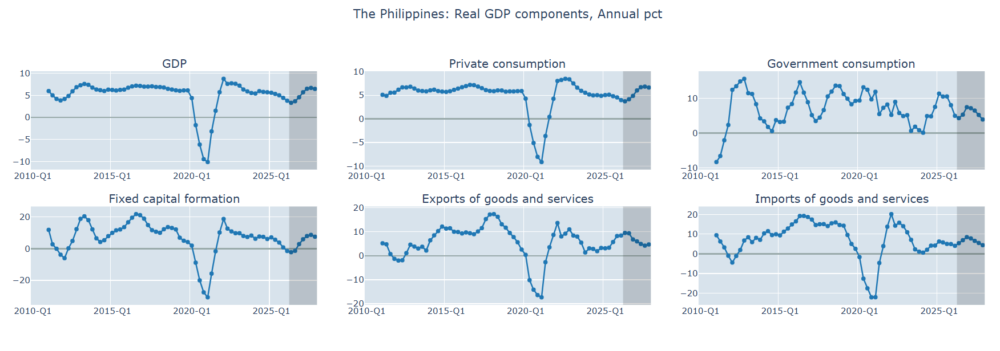
| Chart | Variable |
|---|---|
| GDP | 100*(ann_gdp/ann_gdp[-4] - 1) |
| Private consumption | 100*(ann_cpr/ann_cpr[-4] - 1) |
| Government consumption | 100*(ann_cgg/ann_cgg[-4] - 1) |
| Fixed capital formation | 100*(ann_fcf/ann_fcf[-4] - 1) |
| Exports of goods and services | 100*(ann_xgs/ann_xgs[-4] - 1) |
| Imports of goods and services | 100*(ann_mgs/ann_mgs[-4] - 1) |
Supporting variables
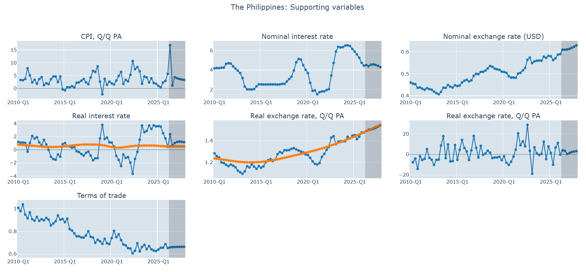
| Chart | Variable | Explanation |
|---|---|---|
| CPI, Q/Q PA | apct_cpi |
% annualised headline inflation |
| Nominal interest rate | 100*i |
Annual interest rate |
| Nominal exchange rate (USD) | e |
Local currency per USD (scaled level) |
| Real interest rate | 100*ri | 100*ri_tnd |
|
| Real exchange rate | re | re_tnd |
|
| Real exchange rate, Q/Q PA, annualized | apct_re |
% annualised real exchange rate growth |
| Terms of trade | tot |
Export deflator / Import deflator |
External environment variables
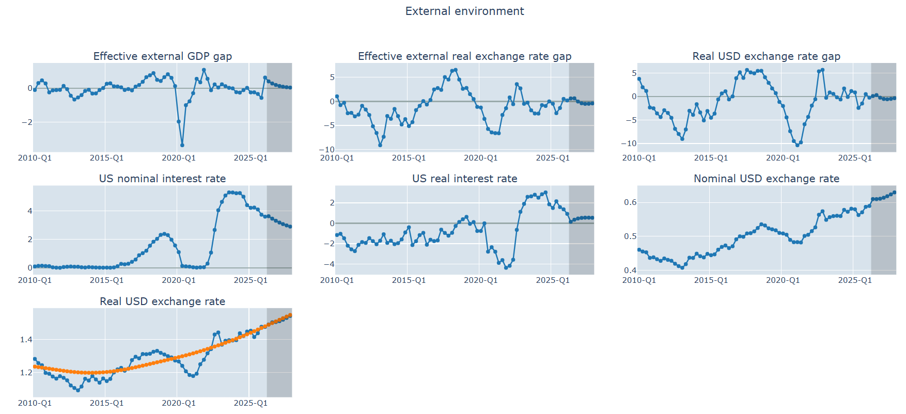
| Chart | Variable | Explanation |
|---|---|---|
| Effective external GDP gap | 100*(gdpwx_gap - 1) |
Trade-weighted foreign demand gap |
| Effective external real exchange rate gap | 100*(rewx_gap - 1) |
Real gap vs USD, weighted for other external countries' moves relative to USD (> 0: currency is competitive against trading-partner basket) |
| Real USD exchange rate gap | 100*(re_gap - 1) |
Real gap vs USD |
| US nominal interest rate | 100*iw |
Annual external interest rate |
| US real interest rate | 100*riw |
Annual external real interest rate |
| Nominal USD exchange rate | e |
Local currency per USD (scaled level) |
| Real USD exchange rate | re | re_tnd |
Annual Reports¶
Real GDP components, Y/Y
Annual % calendar-year growth (annual sums).
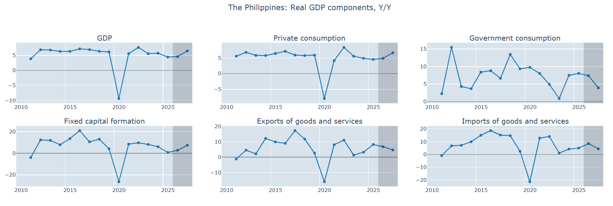
| Chart | Variable |
|---|---|
| GDP | yy_pct_gdp |
| Private consumption | yy_pct_cpr |
| Government consumption | yy_pct_cgg |
| Fixed capital formation | yy_pct_fcf |
| Exports of goods and services | yy_pct_xgs |
| Imports of goods and services | yy_pct_mgs |
Gaps in real GDP components
Annual variable sum over annual trend sum, to show % deviation from trend.
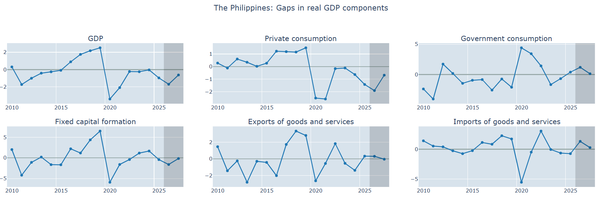
| Chart | Variable |
|---|---|
| GDP | 100*(yy_gdp_gap-1) |
| Private consumption | 100*(yy_cpr_gap-1) |
| Government consumption | 100*(yy_cgg_gap-1) |
| Fixed capital formation | 100*(yy_fcf_gap-1) |
| Exports of goods and services | 100*(yy_xgs_gap-1) |
| Imports of goods and services | 100*(yy_mgs_gap-1) |
Real GDP ratios
Ratio of annual sums to annual GDP.
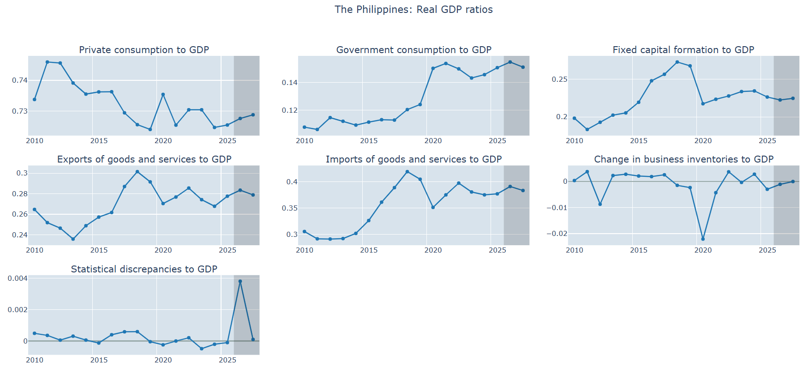
| Chart | Variable |
|---|---|
| Private consumption to GDP | yy_cpr_to_gdp |
| Government consumption to GDP | yy_cgg_to_gdp |
| Fixed capital formation to GDP | yy_fcf_to_gdp |
| Exports of goods and services to GDP | yy_xgs_to_gdp |
| Imports of goods and services to GDP | yy_mgs_to_gdp |
| Change in business inventories to GDP | yy_cbi_to_gdp |
| Statistical discrepancies to GDP | yy_sdx_to_gdp |
Supporting variables
| Chart | Variable | Explanation |
|---|---|---|
| CPI, Q/Q PA | yy_pct_cpi |
% change of annual average CPI |
| Nominal interest rate | 100*yy_i |
Annual average interest rate |
| Nominal exchange rate (USD) | yy_e |
Annual average exchange rate |
| Real interest rate | 100*yy_ri | 100*yy_ri_tnd |
Annual average real interest rate and trend |
| Real exchange rate | yy_re | yy_re_tnd |
Annual average real exchange rate and trend |
| Real exchange rate, Q/Q PA, annualized | yy_pct_re |
Y/Y % change of annual average real exchange rate |
| Terms of trade | yy_tot |
Annual average terms of trade |
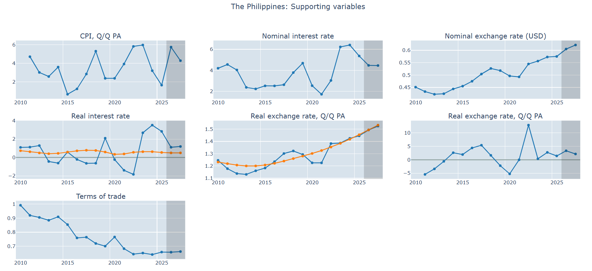
Note
CPI, Q/Q PA and Real exchange rate, Q/Q PA, annualized are Y/Y despite the label.